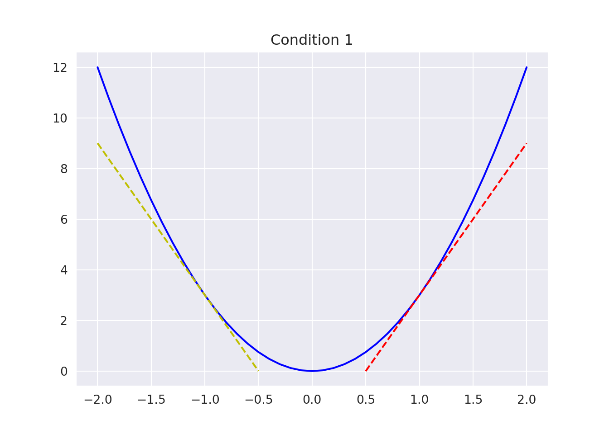
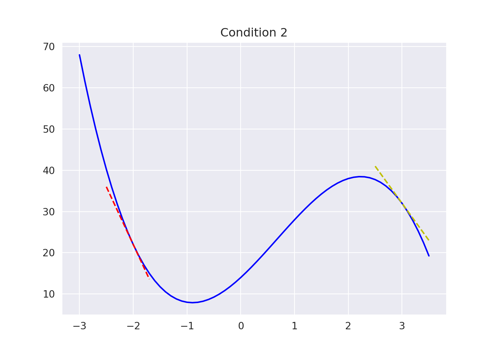
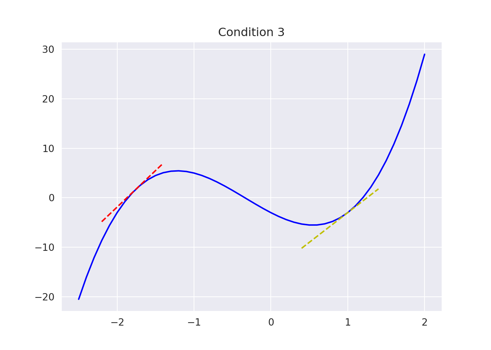

Chapter 4 Numerical Optimisation of Univariate Functions
The simplest functions with which to begin a study of non-linear optimisation methods are those with a single independent variable. Although the minimisation of univariate functions is in itself of some practical importance, the main area of application for these techniques is as a subproblem of multivariate minimisation.
There are functions to be minimised where the variable \(x\) is unrestricted (say, \(x\in \mathbb{R}\)); there are also functions to be optimised over a finite interval (in \(n\)-dimension it is a box). Single variable optimization in a finite interval is important because of its application is in multi-variable optimisation. In this chapter we will consider one dimensional optimisation.
If one needs to find the maximum or minimum (i.e. the optimal) value of a function \(f(x)\) on the interval \([a,b]\) the procedure would be:
- Find all turning (stationary) points of \(f(x)\) (assuming \(f(x)\) is differentiable) on \([a, b]\) and then decide the optimum.
- Find the optimal turning point of \(f(x)\) on \([a,b]\).
Generally it may be difficult/impossible/tiresome to implement (i) analytically, so we resort to the computer and an appropriate numerical method to find an optimal (hopefully the best estimate!) solution of an univariate function. In the next section we introduce some numerical techniques. The numerical approach is mandatory when the function \(f(x)\) is not given explicitly.
In many cases when one would like to find the minimiser of a function \(f(x)\) but neither \(f(x)\) nor \(f'(x)\) are given (or known) explicitly, then the numerical approaches viz : polynomial interpolations or function comparison methods are used. These are the univariate optimisation used as line search in multivariate optimisation.
4.1 Techniques Using Function Evaluations
4.1.1 Bisection Method
We assume that an interval \([a,b]\) is given and that a local minimum \(x^*\in [a,b].\) When the first derivative of the objective function \(f(x)\) is known at \(a\) and \(b\), it is necessary to evaluate function information at only one interior point in order to reduce this interval. This is because it is possible to decide if any interval brackets a minimum simply by looking at the function values \(f(a), f(b)\) and \(f'(a), f'(b)\) at extreme points \(a\) and \(b\). The conditions that to be satisfied are:
- \(f'(a)<0\) and \(f'(b)>0\).
- \(f'(a)<0\) and \(f(b)>f(a)\).
- \(f'(a)>0\) and \(f'(b)>0\) and \(f(b)<f(a)\).
These three situations are illustrated in the Figure below. The next step of the bisection method is to reduce the interval. At the \(k\)-th iteration we have an interval \([a_k,b_k]\) and the mid-point \(c_k=\frac{1}{2}(a_k+b_k)\) is computed. The next interval will be called \([a_{k+1},b_{k+1}]\) which is either \([a_k,c_k]\) or \([c_k,b_k]\) depending on which interval brackets the minimum. The process continues until two consecutive interval produces minima which are within an acceptable tolerance.



4.1.1.1 Exercise
Find the minimum value of: \[ f(x) = -\frac{1}{3}x^3 - \frac{1}{2} x^2 + 2x - 5, \] over the domain \([-3, \ 0]\) using the bisection method. The problem has a minimum of value of -8.33 at \(x = 2\).
4.1.2 Golden Search Method
Suppose \(f: \mathbb{R} \to \mathbb{R}\) on the interval \([a_0,b_0]\) and \(f\) has only one minimum (we say \(f\) is unimodal at \(x^*.\) The problem is to locate \(x^*\). The method we now discuss is based on evaluating the objective function at different points in the interval \([a_0,b_0]\). We choose these points in such a way that an approximation to the minimiser of \(f\) may be achieved in as few evaluation as possible. Our goal is to progressively narrow down the range of the subinterval containing \(x^*\). If we evaluate \(f\) at only one intermediate point of the interval \([a_0,b_0]\), we cannot narrow the range within which we know the minimiser is located. We have to evaluate \(f\) at two intermediate points in such a way that the reduction in the range is symmetrical, in the sense that \(a_1 - a_0 = b_0 - b_1 = \rho(b_0 - a_0),\) where \(\rho < {1\over 2}\) to keep \(a_1\) ‘near’ to \(b_0.\) We then evaluate \(f\) at the intermediate points. If \(f(a_1)<f(b_1)\), then the minimiser must lie in the range \([a_0,b_1]\). If, on the other hand, \(f(a_1)\ge f(b_1)\), then the minimiser located in the range \([a_1,b_0]\). Starting with the reduced range of uncertainty we can repeat the process and similarly find two new points \(a_2\) and \(b_2\), using the same value of \(\rho\) as before. However, we would like to minimise the number of function evaluations while reducing the width of the interval of uncertainty. Suppose that \(f(a_1)<f(b_1)\). Then we know that \(x^*\in [a_0,b_1]\). Because \(a_1\) is already in the uncertainty interval and \(f(a_1)\) is known, we can use these information. We can make \(a_1\) coincide with \(b_2\). Thus, only one new evaluation of \(f\) at \(a_2\) would be necessary. We can now calculate the value of \(\rho\) that results in only one new evaluation of \(f\). To save algebra we will assume that \(b_0 - a_0 = 1.\) Then, to have only one new evaluation of \(f\) it is enough to choose \(\rho\) so that:
\[ \rho(b_1-a_0)=b_1-b_2. \] Because \(b_1-a_0=1-\rho\) and \(b_1-b_2=1-2\rho\), we have: \[\begin{equation} \rho(1-\rho)=1-2\rho.\tag{4.1} \end{equation}\] The solutions of Equation (4.1) are \(\frac{3\pm \sqrt{5}}{2}\), because \(\rho<0.5\) we take \(\rho=\frac{3-\sqrt{5}}{2}\).
Therefore, \[\begin{eqnarray} a_1&=&a_0+\rho(b_0-a_0)\\ b_1&=&b_0-\rho(b_0-a_0) \end{eqnarray}\] Somewhere in the intervals \([a_0,a_1), [a_1,b_1), [b_1,b_0],\) lies the point \(x^*.\)
- If \(f(a_1) < f(b_1), \ \ x^*\in[a_0,b_1].\)
- If \(f(a_1) \ge f(b_1), \ \ x^*\in[a_1,b_0].\)
This forms the basis of a search algorithm since the technique is applied again on the reduced interval.
4.1.2.1 Example
Use the four iterations Golden Section search to find the value of \(x\) that minimizes: \[f(x)=x^4-14x^3+60x^2-70x,\] on the domain \([0, \ 2]\).
Answer:
Iteration 1:
We evaluate \(f\) in two intermediate points \(a_1\) and \(b_1\). We have:
\[\begin{array}{c} a_1=a_0+\rho(b_0-a_0)=0.763,\\ b_1=a_0+(1-\rho)(b_0-a_0)=1.236. \end{array}\]
We compute \[\begin{array}{c} f(a_1)=-24.36,\\ f(b_1)=-18.96. \end{array}\]
Thus we have \(f(a_1)<f(b_1)\), and so the uncertainty interval is reduced to \([a_0,b_1]=[0,1.236]\).
Iteration 2:
We choose \(b_2\) to coincide with \(a_1\), and \(f\) need only to be evaluated at one new point \[a_2=a_0+\rho(b_1-a_0)=0.4721.\] Now we have:
\[\begin{array}{c} f(a_2)=-21.10,\\ f(b_2)=-24.36. \end{array}\]
Now, \(f(b_2)<f(a_2)\), and so the uncertainty interval is reduced to \([a_2,b_1]=[0.4721,1.236]\).
Iteration 3:
We set \(a_3=b_2\), and compute \(b_3\):
\[b_3=a_2+(1-\rho)(b_1-a_2)=0.9443.\]
We have:
\[\begin{array}{c} f(a_3)=-24.36,\\ f(b_3)=-23.59. \end{array}\]
So we have \(f(b_3)>f(a_3)\). Hence, the new interval is \([a_2,b_3]=[0.472,0.944]\).
Iteration 4:
We set \(b_4=a_3\), and compute \(a_4\):
\[a_4=a_2+\rho(b_3-a_2)=0.6525.\]
We have:
\[\begin{array}{c} f(a_4)=-23.84,\\ f(b_4)=-24.36. \end{array}\]
Since \(f(a_4)>f(b_4)\). Thus the value of \(x\) that minimizes \(f\) is located in the interval \[[a_4,b_3]=[0.652,0.944].\]
plt.show()
Goldern Search Pseudocode
Inputs [a, b], tol and rho = (1 + sqrt(5))/2
Let c = b + (a - b)/rho and d = a + (b - a)/rho
while abs(c - d) > tol
if f(c) < f(d) do
(b, f(b)) <- (d, f(d)) and (d, f(d)) <- (c, f(c))
Update c = b + (a - b)/rho and f(c)
else
(a, f(a)) <- (c, f(c)) and (c, f(c)) <- (d, f(d))
end
end
Return (b + a)/24.1.3 Exercises
- Find the minimum value of the one dimensional function \(f(x) = x^2 - 3x\exp(-x)\), over [0, 1], using:
- Bisection Method
- Golden Search Method